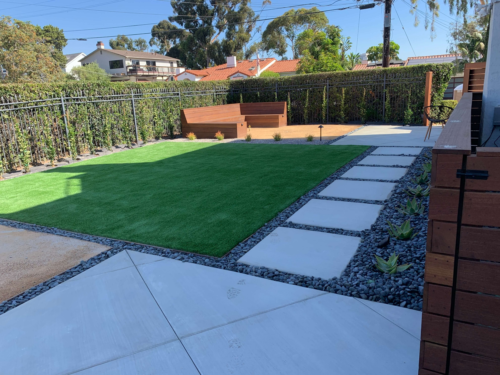

San Diego Hardscape Services

Hardscape That Lasts Generations
Hardscape is the permanent structure of your outdoor space. It is the retaining wall that holds back a hillside, the walkway that leads you through the garden, the patio where you eat dinner on a Tuesday night in October because the weather allows it. In San Diego, where outdoor living is not a luxury but a daily reality, hardscape is the foundation everything else is built around.
At Arcadian Landscape, we build hardscape that is engineered to last. Every wall sits on a compacted base with proper drainage. Every patio is sloped to shed water away from your home. Every walkway is set on a foundation that will not shift, heave, or crack after the first winter rain. We use natural stone, concrete pavers, flagstone, and engineered block -- choosing materials based on the design, the site conditions, and how the space will be used.
Evan Weisman designs hardscape as part of the larger landscape, not as a standalone project. Walls frame planting beds. Patios flow into garden paths. Steps transition between elevation changes that double as seating walls. The result is a landscape where the hard and soft elements feel connected, not bolted together.
Hardscape Services
From structural retaining walls to decorative stone accents, here is the full range of hardscape work we do across San Diego.
Retaining Walls
San Diego is a city of hills. La Jolla, Del Mar, Encinitas, Rancho Santa Fe -- nearly every neighborhood in North County has properties with slopes that need managing. Retaining walls turn unusable hillsides into level terraces for patios, planting beds, and lawn areas. They prevent erosion, redirect water, and add structural definition to the landscape.
We build retaining walls from natural stone, segmental block, poured concrete, and engineered systems depending on the height, load, and aesthetic requirements. Walls under 4 feet are straightforward. Walls over 4 feet require engineering and permits, which we handle. Every wall includes a gravel backfill and perforated drain pipe to relieve hydrostatic pressure -- the force that causes most retaining wall failures.


Walkways & Pathways
A walkway does more than connect point A to point B. It sets the pace of movement through your landscape. A straight, wide path says "come directly to the front door." A curving flagstone path through a garden says "slow down and look around." We design walkways that match the mood and function of the space they serve.
Materials range from formal cut stone and pavers for front entries to irregular flagstone with ground cover joints for garden paths. We set every walkway on a compacted base with proper edge restraint so the stones stay level and tight over time. For properties with slopes, we integrate steps and landings that manage elevation changes gracefully while meeting safety requirements.
Driveways
Your driveway is one of the most visible hardscape elements on your property. It is the first thing guests see when they arrive and it takes daily abuse from vehicles, weather, and foot traffic. We build driveways that look good and hold up -- using interlocking pavers, natural stone, and reinforced concrete with proper drainage.
Paver driveways offer the advantage of flexibility. They can shift slightly with ground movement without cracking, and individual pavers can be replaced if damaged. For properties with steep driveways common in La Jolla and Del Mar, we use materials and patterns that provide traction while managing water runoff during rain events.


Terraces
Terracing transforms a steep, unusable slope into a series of flat, functional levels. Each terrace becomes a planting bed, a seating area, or a transition zone between different parts of the landscape. On large hillside properties, terraces create dramatic visual depth while solving erosion and drainage problems.
We design terraces with retaining walls sized to the slope angle and soil conditions. The walls themselves become design elements -- stacked natural stone for a rustic feel, clean-lined block for a contemporary look, or a combination that transitions from formal near the house to natural as it moves into the garden. Planting beds between terrace walls soften the structure and add color and texture.
Pergolas & Arbors
A pergola defines an outdoor room without enclosing it. It provides partial shade, creates a sense of overhead shelter, and gives climbing plants like bougainvillea, jasmine, and grape vine a structure to grow on. Arbors serve a similar purpose on a smaller scale -- framing an entry point to a garden, a gate, or a transition between landscape zones.
We build pergolas and arbors from wood, steel, and aluminum depending on the design style and maintenance preferences. Wood pergolas age beautifully in San Diego's dry climate when properly sealed. Steel and aluminum structures offer a modern look with minimal upkeep. Every structure is engineered for local wind loads and anchored to a proper foundation.


Stone Work
Stone work is where craftsmanship shows. Dry-stacked stone walls, hand-cut stair treads, natural boulder placement, and custom stone veneers all require a mason's eye and a landscaper's understanding of how stone relates to plants, water, and light. Evan selects stone from local quarries and regional suppliers, choosing pieces for color, texture, and how they will weather over time.
We work with flagstone, fieldstone, decomposed granite, river rock, and boulders ranging from accent pieces to multi-ton specimens placed by machine. Every stone element is designed to look like it belongs on the property naturally -- not dropped there by a contractor. The joints, the mortar color, the placement angle -- these details separate professional stone work from amateur installations.
Choosing the Right Hardscape Material
Natural Stone
Flagstone, travertine, slate, and bluestone are the premium natural stone options we use most in San Diego. Each has a distinct character -- flagstone is warm and irregular, travertine is smooth and Mediterranean, slate is dark and dramatic. Natural stone ages gracefully, develops patina, and no two pieces are alike. It costs more than manufactured alternatives but provides a look that cannot be replicated.
Concrete Pavers
Modern concrete pavers come in hundreds of colors, shapes, and textures -- including options that closely mimic natural stone at a lower price point. They are uniform in size, which makes installation faster and more predictable. Pavers interlock, so they resist shifting and can flex with minor ground movement. Individual pavers can be pulled and replaced without disrupting the surrounding surface.
Poured Concrete
For clean, modern designs, poured concrete offers a seamless look that pavers and stone cannot match. We finish concrete with brushed, exposed aggregate, stamped, or smooth troweled surfaces depending on the application. Concrete is ideal for large patios, contemporary walkways, and custom pool decks. We pour with rebar reinforcement and control joints placed to minimize visible cracking.
Hardscape Gallery
Retaining walls, walkways, patios, and stone work across San Diego and North County.


Hardscape FAQ
San Diego's mild climate allows a wide range of materials. Natural stone like flagstone, travertine, and slate offer a timeless look and handle temperature swings well. Concrete pavers are durable, come in hundreds of colors and patterns, and are easy to repair individually. Poured concrete with exposed aggregate or stamped finishes provides a clean modern aesthetic. We recommend materials based on your design style, traffic patterns, sun exposure, and budget.
A properly engineered and built retaining wall lasts 50 to 100 years. The key factors are the foundation, drainage behind the wall, and material quality. We build retaining walls on compacted gravel bases with perforated drain pipe and filter fabric behind the wall to prevent hydrostatic pressure buildup -- the number one cause of retaining wall failure.
It depends on the scope. Standard patios, walkways, and low garden walls generally do not require permits. Retaining walls over 4 feet, structures like pergolas and shade covers, and work that affects drainage or is near property lines may require permits. Evan identifies permit requirements during design and handles the application process.
Every hardscape project includes a drainage plan. Patios are sloped slightly away from the house to direct water toward planting beds or drain inlets. Retaining walls include perforated pipe and gravel backfill to relieve water pressure. For larger paved areas, we use permeable pavers or install channel drains that connect to the storm system.
In most cases, yes. We source materials from local and regional suppliers and can often find close matches to existing stone, pavers, or concrete finishes. For natural stone, we select pieces from the same quarry or region to ensure color consistency. When an exact match is not possible, we use transition zones or complementary materials that blend naturally.
Related Services

Pavers
Interlocking paver systems for patios, walkways, driveways, and pool decks across San Diego.
Learn More
Patios & Decks
Outdoor living spaces designed for San Diego's year-round climate and your lifestyle.
Learn More
New Construction
Ground-up landscape builds where hardscape forms the foundation of the entire project.
Learn MoreGet Your Free Estimate
Need a retaining wall, a new patio, or a complete hardscape overhaul? Tell us about your project and we will provide a detailed estimate with material options, timeline, and pricing. No pressure, no obligation.